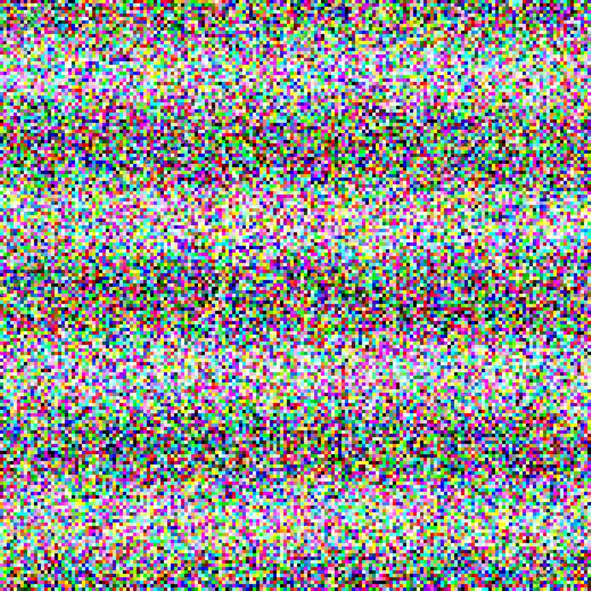
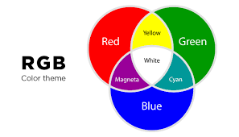
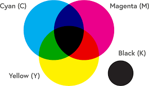

Kleurmodellen
Pixels en resolutie
Als je een foto maakt worden met behulp van invallend licht de kleuren ook opgenomen. Als je dan de foto inzoomt zie je kleine blokjes met ieder een kleur, deze blokjes worden pixels genoemd.Om de pixels op te slaan wordt gebruik gemaakt van kleurmodellen, de twee belangrijkste kleurmoddelen zijn het RGB-model en het CMY-model. Hierbij krijgt elke pixel zijn eigen kleur, waardoor er uiteindelijk een mooi beeld of foto onstaat. Hoe meer pixels er gebruikt worden, hoe meer detail er zit in een foto en hoe hoger de beeldkwaliteit. De hoeveelheid pixels die gebruikt worden, noem je ook wel resolutie.

Kleurmoddelen
RGB-model
De pixels op het beeldscherm van je computer worden aangestuurd door het RGB-model, hierbij bestaan de pixels uit rood, groen en blauw. Deze drie lampjes kunnen veller of minder vel staan, waardoor ze samen elke kleur kunnen creëren. Als bijvoorbeeld rood en groen vel zouden staan en blauw uit, dan zou die pixel de kleur geel geven. Omdat het RGB-model op een zwarte achtergrond werken, zal de kleur zwart tevoorschijn komen als alle lampjes uitstaan. De computer werkt met getallen die aangeven hoe vel de lampjes aan moeten staan, hierbij is 0 uit/zwart en 255 het hoogst/velste. Zo maak je de kleur blauw met (0,0,255) en geel met (255,255,0). 
CMY-model
Bij het weergeven van een foto wordt het RGB-model gebruikt, maar bij het uitprinten van papier wordt gebruik gemaakt van het CMY-model. Dit is omdat het RGB-model een zwarte achtergrond moet hebben en papier is altijd wit gekleurd, hierdoor zouden er andere kleuren uitkomen als je het RGB-model zou gebruiken. Het CMY-model gebruikt de kleuren Cyan, Magenta en geel (Yellow). Met deze kleuren kun je echter geen zwart maken, maar donker grijs. Om toch zwart te kunnen maken hebben ze zwart apart toegevoegd, zo heb je het CMYK-model. Hierin staat de 'K' voor 'K'ey of blac'K'.
